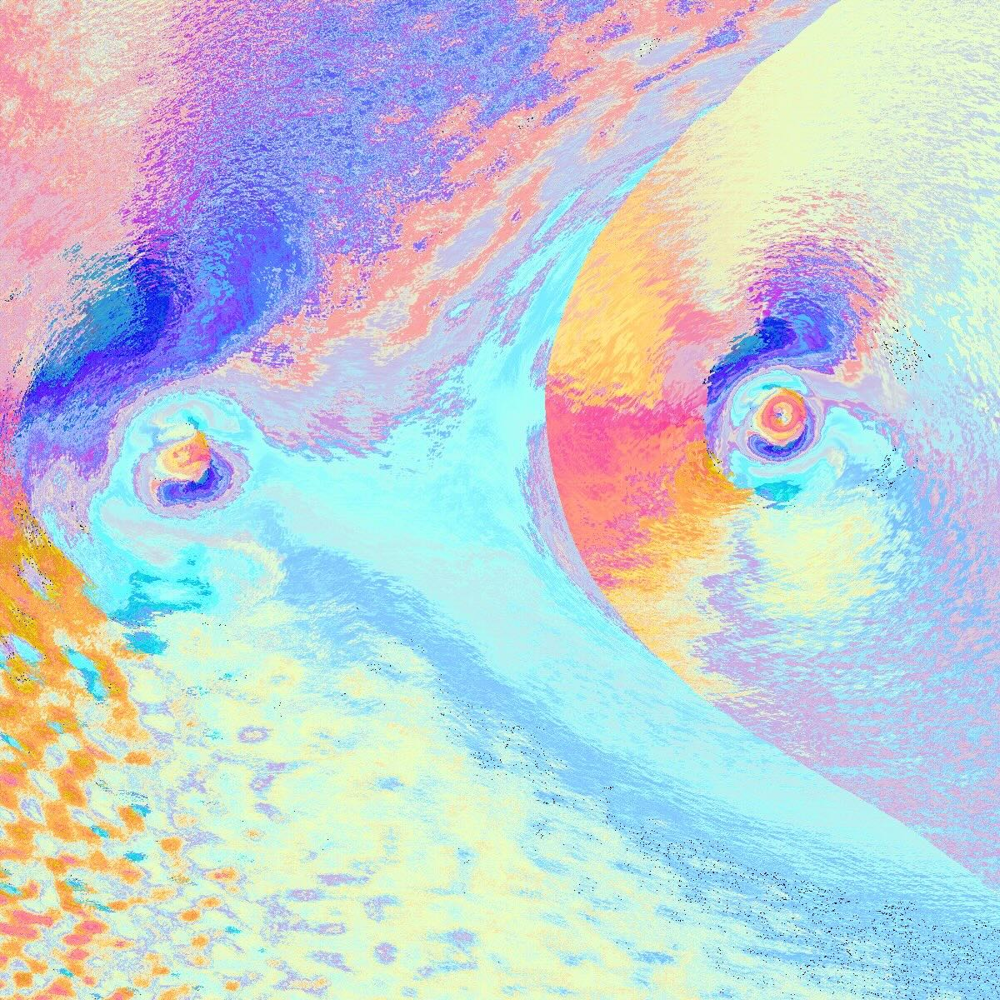

I like to craft VFX and SHADERS for dynamic visuals↓

Intersection
A raymarching experiment that warps space with fluid, organic distortions. Two spheres dynamically reshape their surroundings—rippling through color, texture, and depth. Their Z-axis displacement influences material roughness, creating an ever-evolving interplay of form and light. Integrated with Ultraleap 3Di, allowing intuitive hand-gesture control in a three-dimensional space. The web version transforms this interaction into a spontaneous, unpredictable movement